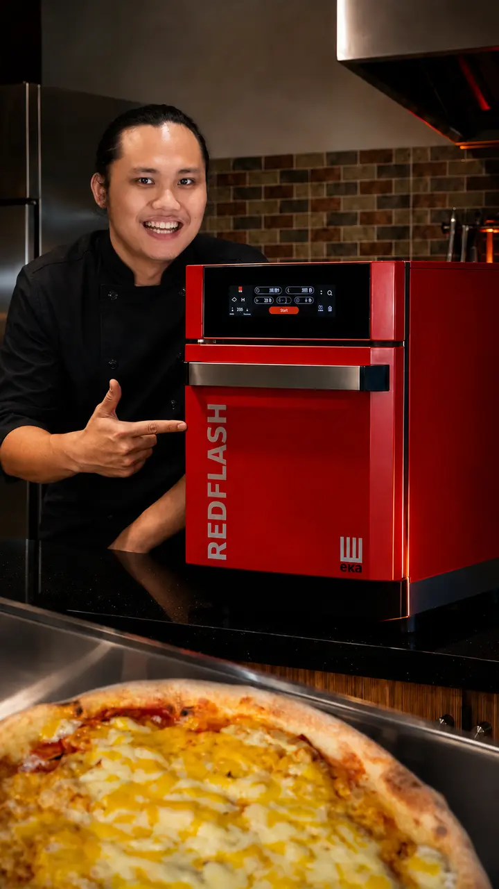
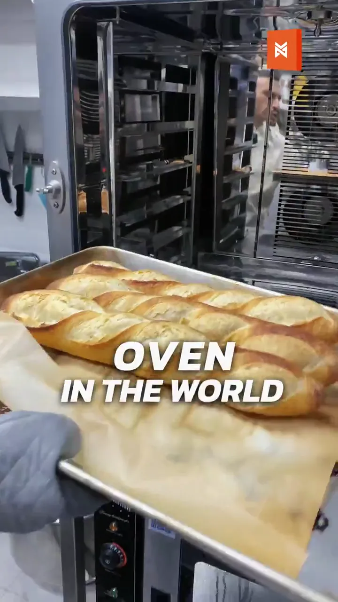
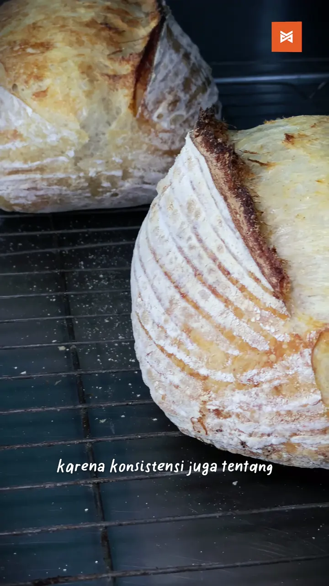
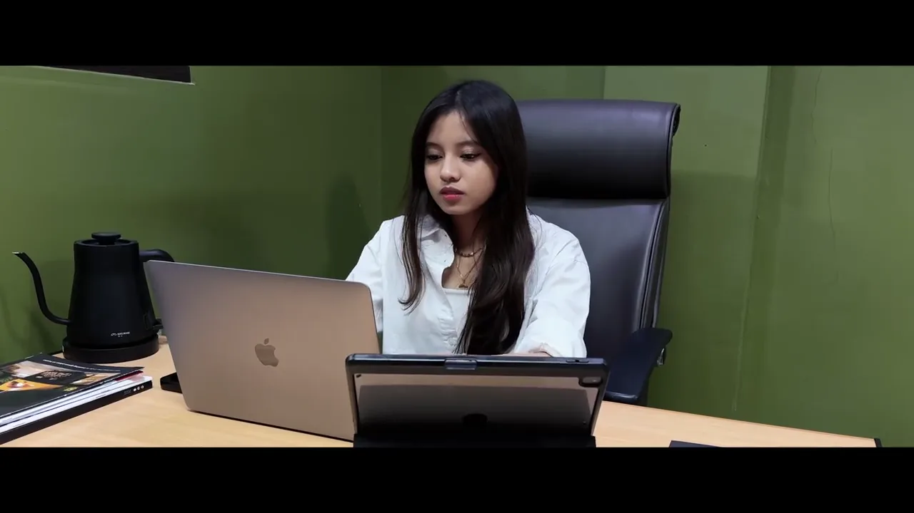

runtime per film
07:48 of finished edit across the selection
indonesia / remote / social-first
I'm Bili Yuniarto. I work across content strategy, video production, and editing—turning product or business subjects into stories people can watch, understand, and act on.
b2b + social / 9:16 + 16:9 / plan → shoot → edit
last renders
runtime per film
07:48 of finished edit across the selection
of the selection is cut vertical-first, for the feed
selected films




05 films, from product explainers to a short film
edit rhythm
hookpayoff
Pacing built around the hook and the payoff
where it lives
03 categories, one storytelling discipline
01 / selected work
A focused selection across B2B product education, commercial social content, creator-led storytelling, branded teasers, and narrative work. The priority is clarity, retention, and a reason for the viewer to care.
[ how I work ]
02 / approach
I start with what the audience needs to understand or feel, then let that goal shape the hook, coverage, edit, and platform treatment.
Translate the brief into one clear audience problem, need, or curiosity worth stopping for.
inputBuild the shots, talent beats, product details, and proof points around the final story.
shot listStructure the message first, then use pacing, text, sound, and visual rhythm to hold attention.
timelineAdapt the delivery to the screen, context, and viewing behavior instead of reposting blindly.
deliveredselected capabilities
03 / about
My background spans marketing communications, videography, editing, photography, social media, website content, and B2B product communication.
That mix matters because I don't treat content as decoration. I think about the audience, the message, the platform, and the business objective—then make the creative choices serve all four. Additional B2B product education, testimonial, unboxing, and behind-the-scenes work is available on request.
Social content & video, for the work that lives between the brief and the feed.
open for projects
what now
Open to social content, video production, editing, product storytelling, and marketing communication opportunities.